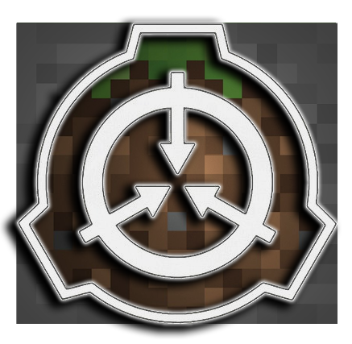
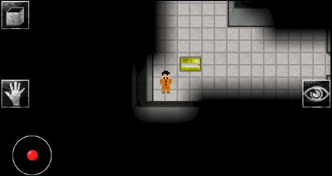

Jestem Leszek
O mnie
Mam 21 lat i jestem studentem trzeciego roku na Politechnice Wrocławskiej. W moim życiu kłądę główny nacisk na zdobywanie nowych umiejętności. Jestem uniwersalnym komponentem naszego zespołu.
Zainteresowania:
- Nowe technologie
- Sztuczna inteligencja
- Programowanie gier
- Matematyka i fizyka
- Kalistenika i bieganie
- Szachy
Projekty:
- SCP: BLOCKTAINMENT BREACH

Razem ze znajomym w ciągu roku stworzyliśmy mapę do popularnej gry Minecraft na podstawie gry SCP - Containment Breach. Ma ona prawie 70 000 pobram liczac dwie najpopularniejsze strony link. Podczas tworzenia projektu udało nam się rozwiązac ogromną liczbę problemów i obejśc wiele ograniczen które nakładała na nas gra.
- Gra na Android

Do tworzenia tej gry podchodze już trzeci raz gdyż za każdym razem projekt kończył się niepowodzeniem. Za pierwszym razem projekt przerwałem gdyż nie poradziłem sobie z optymalizacją a za drugim uznałem że kod jest nieczytelny. W trakcie tego nauczyłem sie sporo o OpenGL oraz o programowaniu na system Android.